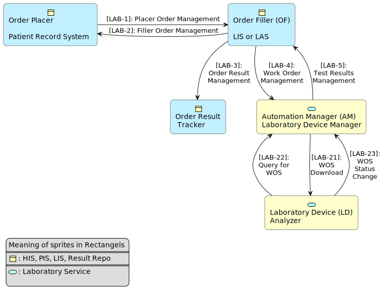

CH LAB-Order (R4)
2.0.0 - trial-use

CH LAB-Order (R4)
2.0.0 - trial-use

This page is part of the CH LAB-Order (R4) (v2.0.0: STU 2) based on FHIR (HL7® FHIR® Standard) R4. This is the current published version. For a full list of available versions, see the Directory of published versions
Fig.: Laboratory Order and Testing Workflow

The customer (e.g. a doctor) requires various laboratory tests to supplement the diagnostic process. He creates an order document in his Electronic Medical Records (EMR) system, which contains the administrative data structured in accordance with the CH Core implementation guide and whose contents are available in the EMR. From the analyses provided by the LIS, he can select those that help him with his question, and he can also determine the samples corresponding to the analyses. For example, he wants to have glucose analyzed in the blood and cerebrospinal fluid. The laboratory system can store the information on the required specimen containers and any additives in the system. The pre-analytical conditions are specified.
He can also add information about the clinical context to the laboratory order: problem list, current medication list, questions about the prescribed analyses.
The order document is sent to the laboratory information system (LIS).
Example order document by ServiceRequest: CH LAB-Order 0-best-practice
The client (e.g., physician) requires various laboratory tests for further diagnostics. For this purpose, he creates an order document in his practice information system with the necessary information on the patient, laboratory test, samples, etc. The necessary sample material (serum, urine, cerebrospinal fluid, etc.) is stored in the corresponding order documents. The necessary sample material (serum, urine, cerebrospinal fluid) is collected in appropriate containers and clearly assigned to the order document (Specimen.identifier, Specimen.container.identifier). Samples can be examined in the own laboratory, or they have to be sent via mail or courier to the external laboratory. There, the laboratory information system assigns them their own identifier (Specimen.accessionIdentifier).
A form (Questionnaire) is presented to the client, which contains the following information:
Information on the requested examinations
Example order document by form: CH LAB-Order 1-tvt by Form
It is not uncommon for the results of laboratory tests to lead to the request for additional tests on the same sample, or in-house laboratory analyses are supplemented by further tests that can only be carried out in an external laboratory.
In the 2-pertussis example, the in-house laboratory tests (automated blood count, CRP) are supplemented by a search for the Bordetella pertussis and parapertussis DNA in the throat swab, carried out by an external contract laboratory, in order to rule out whooping cough.
When the placer system request additional tests the existing samples, it copies the original ServiceRequest, adds the required laboratory tests and an Order Control Code ‘RP’, which means an order/service replace request. A special invariant rule ‘sr-1’ ensures that a reference to the original ServiceRequest is created.
The Order Control Codes can also be used to cancel, hold or release order requests on hold. In these cases as well the reference to the original order has to be created.
Example of referenced Service Request: CH LAB-Order 2-pertussis The code in the element ‘orderDetail’ would be ‘NW’ for “New order/service”, or the element could be completely omitted.
Example Service Replace Request: CH LAB-Order 2-pertussis additional test The Replace Request contains a Reference to the previous ServiceRequest and an element ‘orderDetail’, carries the order Control Code from the Code System v2-0119: RP for “Order/service replace request”, ‘CA’ for “Cancel order/service request”, ‘HD’ for “Hold order request”, and ‘RL’ for “Release previous hold”
This use case corresponds to example 5-biol-monit. In order to assess the exposure of workers to chemical substances, measurements at the workplace are supplemented by occupational health checkups. The toxic substances themselves or their metabolites in serum or urine can be determined. The order is initiated by the occupational physician of the company or the insurance company. The problem of employee fluctuations must be kept in mind.
Examples are:
Work lists are processed, which last over a longer period of time (days/weeks). Generally, specific examinations are requested on multiple patients.
Example order document with ServiceRequest: CH LAB-Order 5-biol-monit.
Example order document with ServiceRequest and Form: CH LAB-Order 5-biol-monit-form.
After the laboratory order has been received and processed, the situation may arise in which the laboratory physician wishes to make suggestions for additional or alternative examinations to the author of the order. He can use the received order document for this purpose, exchange the personal data of the sender and receiver through his information system, and send it back with the suggestions for further or alternative laboratory examinations.